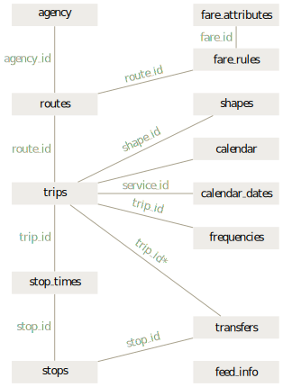

Solving the last mile problem with OpenTripPlanner (OTP), Mapzen Pelias, and open data
Seaport Hotel & World Trade Center
Boston, MA

Presenters: Madeline Steele (SteeleM@trimet.org), Tom Lin (LinT@trimet.org)
About TriMet
Founded 45 years ago, TriMet provides bus, light rail and commuter rail service in the Portland, Oregon region. Our service area has a population of 1.5 million people.

Open Data / Open Source Leadership
2000: Implemented open source software policy
2002: Released open data
2005: Google Transit & GTFS
2008: Implementation of open source GIS
2009: Launch of OpenTripPlanner
2011: Adoption of OpenStreetMap
The Challenge
First/Last Mile problem - transit can't take you door to door
More options than ever, but we lack tools that combine them

The Opportunity
FTA's MOD Sandbox Program
$8 million for innovative, accessible and seamless multimodal service and tools
78 applicants - 11 awardees
With in-kind contributions, TriMet's award totals over $1 million
Our Proposal
Enhance tools to make mixed-mode trips as frictionless as possible
Solve the last mile problem through innovation and collaboration
Make the platform replicable by using open data and open source
Key Project Partners
| OpenTripPlanner Improvements | |
| Extended geocoder functionality | |
| Project Coordination | |
| Local data improvements |
Data Providers
1. OpenTripPlanner (OTP)

Open source platform developed by TriMet and partners in 2009
Uses open data sources: OpenStreetMap; GTFS; and the National Elevation Dataset (NED)
Can combine multiple modes into a single trip
Dozens of applications worldwide
OTP Deployments

Enhancements to OTP
Adding additional modes
Incorporating real-time info
Better pedestrian routing
User interface improvments
Modern, modular library
Mobile-first design
Spanish language support
Open Data Enhancements
Improved regional addresses for increased address match rate
Make it easier to load authoritative data to OpenAddresses
Adding sidewalk data to
OpenStreetMap